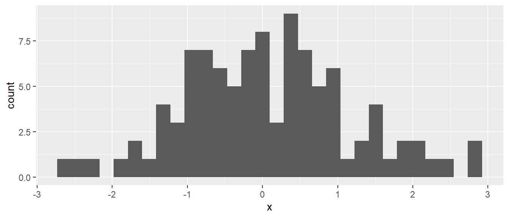
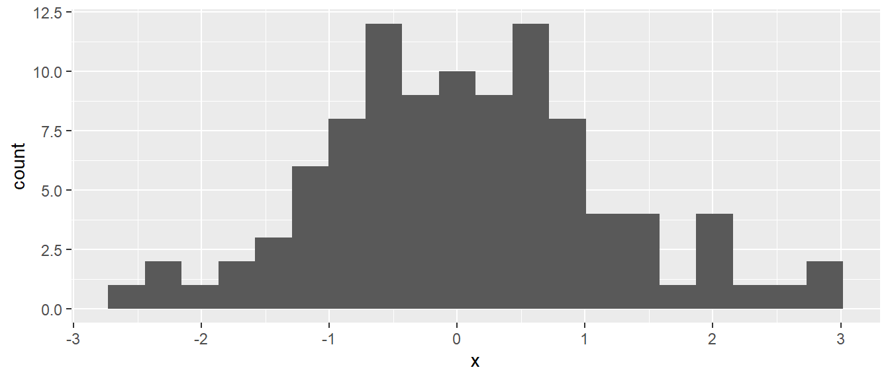
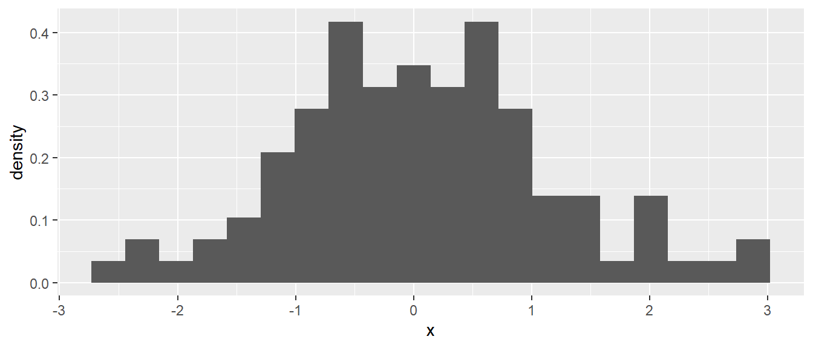
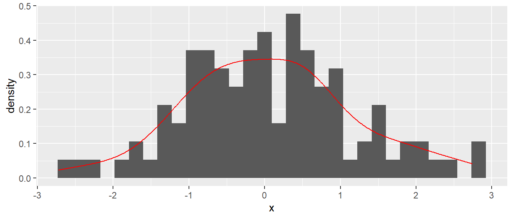

df <- tibble(
dv = 1:8,
iv = 11:18,
group = rep(c('a','b'), 4),
team = rep(c('Nuggets','Lakers'), each=4)
)6 Datenvisualisierung mit ggplot2
ggplot2 ist eine spezielles package das Funktionen bereitstellt um Grafiken zu erstellen. ggplot2 verfolgt einen ganz speziellen Ansatz um Grafiken zu beschreiben indem eine spezielle Sprache, eine sogenannten domänenspezifische Sprache, verwendet wird. Das hört sich im ersten Moment komplizierter an als es ist. Wie gleich gezeigt wird, werden in ggplot Grafiken erstellen indem verschiedene Ebenen übereinander gelegt werden. In der Syntax von ggplot2 erfolgt dieses übereinanderlegen mittels des + Operators im Zusammenspiel mit speziellen Funktionen. Die Hauptidee besteht allerdings darin, das einzelne Variablen auf verschiedene Skalen in einer Grafik abgebildet werden und dann mittels geometrischer Elemente, sogenannte geoms, dargestellt werden.
ggplot2 arbeitet mit einem zweidimensionalen Darstellungsmodell und ist daher nicht für 3D-Darstellungen geeignet. Starten wir mit einem einfachen Datensatz und schauen uns an wie mit ggplot2 damit gearbeitet wird.
| dv | iv | group | team |
|---|---|---|---|
| 1 | 11 | a | Nuggets |
| 2 | 12 | b | Nuggets |
| 3 | 13 | a | Nuggets |
| 4 | 14 | b | Nuggets |
| 5 | 15 | a | Lakers |
| 6 | 16 | b | Lakers |
| 7 | 17 | a | Lakers |
| 8 | 18 | b | Lakers |
Als Grundgerüst für jede Abbildung mit ggplot2 wird immer die ggplot()-Funktion benötigt. Das erste Argument an ggplot() ist ein tibble() welches die darzustellenden Daten enthält.
ggplot(df)In Abbildung 6.1 ist dem ersten Anschein nach zunächst nichts Beeindruckendes passiert. ggplot() hat eine leere, graue Ebene erstellt. Als Nächstes wird nun eine erste Abbildung definiert. Die Variable iv soll auf die \(x\)-Achse abgebildet werden. D.h. die Werte aus dem tibble df unter dem Bezeichner dv sollen auf der \(x\)-Achse dargestellt werden. Die dv-Daten in df beinhalten die Werte 11:18 als \([11,12,\ldots,18]\). Die Abbildung der Daten auf die \(x\)-Achse wird über das Argument mapping durchgeführt unter der Zuhilfenahme der Funktion aes().
ggplot(df, mapping = aes(x = iv))Die Grafik ist marginal interessanter geworden (siehe Abbildung 6.2). Allerdings gibt es nun eine vollständige \(x\)-Achse mit Beschriftung und Einheiten. ggplot() hat bereits den Wertebereich von dv miteinbezogen und den Wertebereich der \(x\)-Achse entsprechend angepasst. Im Code wurde dazu an das Argument mapping die aes()-Funktion übergeben. Der aes()-Funktion wurde dabei das Argument x mit dem Namen der Variable zugewiesen aus dem tibble übergeben. Über das Argument x wurde ggplot() mitgeteilt, die Abbildung der Werte auf die \(x\)-Achse durchzuführen. Wenn die Hilfe von ?ggplot() konsultiert wird, zeigt sich, dass das zweite Argument von ggplot() ohnehin das Argument mapping ist. Daher kann die explizite Angabe des Argumentnamens entfallen.
Tipp
Die Funktion aes() ist kurz für aesthetics und muss immer verwendet werden um die Abbildung von Werten auf Skalen durchzuführen.
Da die Funktion aes() ein Argument x hat, dann wird es wohl auch ein Argument y geben. Daher wird die Variable dv aus df auf die \(y\)-Achse abgebildet.
ggplot(df, aes(x = iv, y = dv))In Abbildung 6.3 wurde nun die zweite Achse erstellt. Allerdings sind noch keine Daten sichtbar. Ein Blick auf ?aes zeigt, dass x und y ohnehin die ersten beiden Argumente für aes() sind, sodass die explizite Benennung dieser Argumente entfallen kann. Zurück zu den Abbildungen: Es gibt nicht nur die beiden Achsen, sondern auch beispielsweise die Möglichkeit, die Größe oder Farbe von Objekten festzulegen. Diese Aspekte werden jedoch erst interessant, wenn Ebenen mit geometrischen Objekten definiert werden.
6.0.1 geom_point()
Fangen wir mit dem einfachsten geometrischen Objekt an, dem Punkt bzw. den Punkten. Punkte sind mindestens durch ihre \(x\)- und \(y\)-Position, die Größe und die Farbe gekennzeichnet. Schauen wir uns zunächst einmal nur die Position an und lassen die Farbe und die Größe auf den voreingestellten Werten.
ggplot(df, aes(x = dv, y = iv)) +
geom_point()In Abbildung 6.4 haben wir ein einfaches Streudiagramm der Daten erstellt. Schauen wir uns den Code etwas genauer an. Wir haben eine Funktion geom_point() verwendet und diese mittels eines + an ggplot() angehängt. Der erste Teil des Namens geom zeigt an, dass es sich um ein geometrisches Objekt handelt. Im Folgenden werden wir verschiedene Funktionen sehen, die alle mit dem Kürzel geom beginnen und entsprechend unterschiedliche Formen haben. Für jedes geom erstellt ggplot() eine eigene Ebene. Ein mentales Template könnte eine Folie wie früher bei den Overhead-Projektoren sein. ggplot() nimmt sich eine leere Folie, legt diese auf die Grafikfolie mit den Achsen und malt die Punkte an die entsprechende Stelle auf die leere Folie.
Wie vorhin schon erwähnt, führt der folgende kürzere Code zum gleichen Ergebnis.
ggplot(df, aes(dv, iv)) +
geom_point()Diese Schreibweise wird uns im Folgenden immer wieder begegnen. Wenn ihr euch die Hilfe für geom_point() anseht, dann stellt ihr fest, dass geom_point() tatsächlich eine ganz normale Wald-und-Wiesen-Funktion ist. Das erste Argument an geom_point() ist ebenfalls mapping. Daher können wir das Streudiagramm auch folgendermaßen erstellen.
ggplot(df) +
geom_point(aes(dv, iv))
Der Unterschied zwischen dem Argument mapping in ggplot() und in geom_point() besteht darin, dass die Abbildung im ersten Fall für alle geoms gilt, die weiter angehängt werden, während im zweiten Fall mapping in geom_point() die Abbildung nur für geom_point() gilt. Wenn wir gleich mehrere geoms aneinanderreihen, wird der Unterschied klarer.
Schauen wir uns als Nächstes zwei verschiedene Arten an, die Größe der Punkte zu bestimmen. Hier gibt es auch wieder zwei Fälle zu unterscheiden: Einmal die Größe innerhalb von aes() zu bestimmen oder als Argument zu geom_point(). Im ersten Fall können wir dynamisch anhand der zugewiesenen Abbildungsvariable die Größe verändern, während im zweiten eine Größe für alle Punkte zugewiesen wird. Innerhalb von aes() können wir den Namen der Variable nehmen, während dies in geom_point() nicht möglich ist – hier müssen wir eine Zahl übergeben.
ggplot(df, aes(dv,iv, size=dv)) +
geom_point()
ggplot(df, aes(dv, iv)) +
geom_point(size=4)
aes()

geom_point()
In Abbildung 6.5 (a) sehen wir, dass die Größe der Punkte variiert und ggplot() auch noch eine Legende der Größen angefügt hat. In Abbildung 6.5 (b) haben alle Punkte die gleiche Größe.
Das gleiche Prinzip können wir auch auf die Farbe der Punkte anwenden.
ggplot(df, aes(dv,iv, color = team)) +
geom_point()
ggplot(df, aes(dv, iv)) +
geom_point(color = 'red')aes()

geom_point()
Wenn die Farbe in aes() definiert wird, erhalten wir eine Legende, und die Farbe wird anhand der Variable bestimmt (siehe Abbildung 6.6 (a)), während bei der Definition als Argument zu geom_point() alle Punkte die gleiche Farbe bekommen (siehe Abbildung 6.6 (b)).
Natürlich können wir auch gleichzeitig die Farbe und die Größe bestimmen.
ggplot(df, aes(dv,iv, size = dv, color = team)) +
geom_point()
ggplot(df, aes(dv, iv)) +
geom_point(size = 4, color = 'red')
aes()
geom_point()
6.0.2 geom_line()
Schauen wir uns als Nächstes geom_line() an. Wie der Name vermuten lässt, können wir mit diesem geom Linien erstellen. Linien werden zwischen aufeinanderfolgenden Punkten, die eine \((x, y)\)-Position haben, gezogen. Daher sind die gleichen Abbildungen wie bei den Punkten möglich.
ggplot(df, aes(iv, dv)) +
geom_line()Wenn wir zwei unterschiedliche Linien für die Teams erstellen wollen, dann können wir das zum Beispiel über die Farbe steuern.
ggplot(df, aes(iv, dv, color = team)) +
geom_line()Jetzt fehlt in Abbildung 6.9 das Verbindungsstück zwischen den beiden Punkten, das in Abbildung 6.8 noch vorhanden war, da ggplot() den Datensatz in zwei Teildatensätze unterteilt.
Wie oben schon angedeutet, können wir mehrere geoms miteinander kombinieren.
ggplot(df, aes(iv, dv)) +
geom_line() +
geom_point()
Die Reihenfolge spielt dabei eine Rolle: geoms, die später hinzugefügt werden, liegen oberhalb von geoms, die früher definiert wurden.
ggplot(df, aes(iv, dv)) +
geom_point(color = 'red', size = 4) +
geom_line()
ggplot(df, aes(iv, dv)) +
geom_line() +
geom_point(color = 'red', size = 4)
geom_point() vor geom_line()

geom_line() vor geom_point()
geoms
In Abbildung 6.11 (a) sehen wir, dass die Linien die Punkte durchschneiden, da sie oberhalb liegen, während in Abbildung 6.11 (b) die Linien hinter den Punkten liegen.
Vielleicht ist es euch schon aufgefallen, dass wir in den letzten beiden Beispielen den Mechanismus verwendet haben, dass die Abbildung in ggplot() definiert wurde und dann für beide geoms, geom_point() und geom_line(), angewendet wurde. Wenn wir die Abbildung nur in geom_point() definiert hätten, würde geom_point() meckern, dass es nicht weiß, wo es die Punkte hinsetzen soll.
ggplot(df) +
geom_line(aes(iv, dv)) +
geom_point()Error in `geom_point()`:
! Problem while setting up geom.
ℹ Error occurred in the 2nd layer.
Caused by error in `compute_geom_1()`:
! `geom_point()` requires the following missing aesthetics: x and yNachdem wir jetzt schon die Grundprinzipien kennengelernt haben, schauen wir uns die nächsten geoms etwas kürzer an.
6.0.3 geom_boxplot()
Der Boxplot als eine praktische Art der Visualisierung sollte natürlich auch nicht fehlen und hat daher ein eigenes geom spendiert bekommen. Hier ist zu beachten, dass die Abbildung auf die \(x\)-Achse üblicherweise nicht numerisch, sondern entweder nominal oder ordinal ist. In der Praxis können auch Zeichenketten verwendet werden, die dann als Faktor interpretiert werden.
ggplot(df, aes(team, dv)) +
geom_boxplot()
geom_boxplot().
Wir können wieder mehrere Abbildungen kombinieren und zum Beispiel getrennte Boxplots für die Teams und die Gruppen erstellen.
ggplot(df, aes(team, dv, fill=group)) +
geom_boxplot()6.0.4 geom_col()
Die nächste Art von Visualisierung sind Säulendiagramme. Hier muss allerdings noch etwas Vorarbeit geleistet werden. Bei der Verwendung von Säulendiagrammen wird in den meisten Fällen durch die Höhe der Säulen der Mittelwert der Daten dargestellt. Aber um den Mittelwert korrekt interpretieren zu können, sollte auch immer ein Maß für die Streuung der Daten integriert. Um zunächst aber die Mittelwerte darzustellen, müssen diese zunächst aus den Daten berechnet werden.
df_team <- df |>
group_by(team) |>
summarize(m = mean(dv), sd = sd(dv))| team | m | sd |
|---|---|---|
| Lakers | 6.5 | 1.29 |
| Nuggets | 2.5 | 1.29 |
Da die Standardabweichungen auch noch benötigt werden, wurden diese direkt mitberechnet. Säulendiagramme können nun mittels des geoms geom_col() erstellt werden. Wie bei geom_boxplot() sollte die \(x\)-Skala nominal sein.
ggplot(df_team, aes(team, m)) +
geom_col()
geom_col().
Als nächstes muss nun die Standardabweichung in die Grafik integiert werden. Dazu ist ein weiteres geom notwendig.
6.0.5 geom_errorbar()
Um die Streuung in einem Säulendiagramm darzustellen, wir das geom geom_errorbar() verwendet. Um die Fehlerbalken zu bestimmen, muss das obere und das untere Ende definiert werden. Dazu kommen zwei neue Abbildungen aes() zum Einsatz. Das Argument ymin bestimmt das untere Ende des Fehlerbalkens, während ymax das obere Ende bestimmt. Daher können mit geom_errorbar() auch unterschiedlich lange Fehlerbalken nach oben und unten realisiert werden.
ggplot(df_team, aes(team, m)) +
geom_col() +
geom_errorbar(aes(ymin = m - sd, ymax = m + sd))geom_col().
In Abbildung 6.15 sind die Fehlerbalken dargestellt. Allerdings sehen die Fehlerbalken noch nicht besonders visuell ansprechend aus, da sie relativ breit sind. Mit dem Argument width kann die Breite der Balkenhüte spezifiziert werden. Mit dem Parameter linewidth können weiterhin noch die Linienbreite bestimmt werden. Die Farbe kann wie bereits bei anderen geoms gezeigt, über das Argument color angepasst werden.
ggplot(df_team, aes(team, m)) +
geom_col() +
geom_errorbar(aes(ymin = m - sd, ymax = m + sd),
width = 0.3,
color = 'red',
linewidth = 1.5)geom_col().
Ein Problem bei der Darstellung der Fehlerbalken mit geom_errorbar() entsteht, wenn es mehrere Werte für jeden \(x\)-Wert gibt. In der Standardeinstellung werden die Werte übereinander gesetzt (stacked). Erstellen wir zunächst einen passenden Datensatz um das Problem zu demonstrieren.
df_tg <- df |> group_by(team, group) |> summarize(dv_bar = mean(dv), dv_sd = sd(dv))| team | group | dv_bar | dv_sd |
|---|---|---|---|
| Lakers | a | 6 | 1.414 |
| Lakers | b | 7 | 1.414 |
| Nuggets | a | 2 | 1.414 |
| Nuggets | b | 3 | 1.414 |
Schauen wir uns zunächst an, was mit geom_col() passiert, wenn mehrere \(x\)-Werte vorhanden sind.
ggplot(df_tg, aes(team, dv_bar, fill = group)) +
geom_col()In Abbildung 6.17 ist zu erkennen, dass die Säulen übereinander gestapelt wurden. D.h. für jeden \(x\)-Wert wurden die \(y\)-Werte übereinander gesetzt. Dies ist in den seltensten Fällen die Darstellungsart die tatsächlich intendiert ist. In den meisten Fällen sollen die Säulen nebeneinander angezeigt werden um einen visuellen Vergleich der Werte für jeden \(x\)-Wert zu ermöglichen. Die kann erreicht werden, indem wir das Argument position mit dem Argument "dodge" in geom_col() verwendet wird.
ggplot(df_tg, aes(team, dv_bar, fill = group)) +
geom_col(position = 'dodge')Abbildung 6.18 ist die Darstellung schon deutlich besser. Die Säulen sind nebeneinander abgebildet und gruppiert für jeden \(x\)-Wert. Es entsteht nun allerdings ein Problem wenn die Fehlerbalken dazu gefügt werden.
ggplot(df_tg, aes(team, dv_bar, fill = group)) +
geom_col(position = 'dodge') +
geom_errorbar(aes(ymin = dv_bar - dv_sd, ymax = dv_bar + dv_sd))Die Fehlerbalken in Abbildung 6.19 sind beide in der Mitte der \(x\)-Werte platziert und nicht zusammen mit den Säulen horizontal verschoben. Um die Fehlerbalken ebenfalls zu verrücken muss in geom_errorbar() ebenfalls den Parameter position mit dem Argument "dodge" verwendet werden.
ggplot(df_tg, aes(team, dv_bar, fill = group)) +
geom_col(position = 'dodge') +
geom_errorbar(aes(ymin = dv_bar - dv_sd, ymax = dv_bar + dv_sd),
position = 'dodge')Das Ergebnis in Abbildung 6.20 kommt der gewollten Darstellung schon näher. Allerdings sind nun die Hüte der Fehlerbalken standardmäßig genauso breit wie die Säulen. Wenn nun die Breite mit width wieder verändert wird. Dann tritt das folgende Problem auf (siehe Abbildung 6.21).
ggplot(df_tg, aes(team, dv_bar, fill = group)) +
geom_col(position = 'dodge') +
geom_errorbar(aes(ymin = dv_bar - dv_sd, ymax = dv_bar + dv_sd),
position = 'dodge',
width=.7)Die Fehlerbalken in Abbildung 6.21 sind zwar horizontal verschoben, aber nur um die Breite der Fehlerbalken die mittels width=.7 verschmälert wurden. Dadurch die Fehlerbalken nicht mehr auf den Säulen zentriert. Die lässt sich diese Verhalten nachvollziehen? ggplot() berechnet zunächst die Breite des geoms. In diesem Fall wurde die Breite für die Fehlerbalken mit width = .7 benutzerdefiniert. D.h. Die Fehlerbalken haben die Breite \(0.7\) graphische Einheiten. Durch den übergebenen Parameter "dodge" an das Argument position werden die Fehlerbalken nebeneinander dargestellt und entsprechend ihrer Breite in graphischen Einheiten gegeneinander verschoben, so dass keine Überlappung zustande kommt. Die Säulen gegen die die Fehlerbalken aber optisch zentrierte werden sollen sind aber breiter. Standardmäßig weist ggplot() den Säulen eine Breite von \(0.9\) graphischen Einheiten zu. D.h. das Problem entsteht durch die unterschiedlichen Breiten der beiden geoms die ggplot() verwendet um die horizontale Verschiebung zu berechnen.
Diese Einsicht leitet dann aber entsprechend schon die Lösung. geom_errorbar() muss die Information bekommen, dass die Fehlerbalken weiter gegeneinander verschoben werden sollen. Dazu gibt es die Funktion position_dodge() mit dem Argument width. position_dodge() kann verwendet werden um die Verschiebung um einen beliebigen Faktor unabhängig von der Breite des geoms zu erhalten. Für das vorliegende Problem wird dazu position_dodge(width = .9) verwendet.
ggplot(df_tg, aes(team, dv_bar, fill = group)) +
geom_col(position = 'dodge') +
geom_errorbar(aes(ymin = dv_bar - dv_sd, ymax = dv_bar + dv_sd),
position = position_dodge(width = .9),
width=.7)Entsprechend wenn nun die Breite der Säulen direkt definiert werden würde, dann wäre die Position der Fehlerbalken wiederum fehlerhaft, da die Verschiebung gegeneinander zu groß ist (siehe Abbildung 6.23).
ggplot(df_tg, aes(team, dv_bar, fill = group)) +
geom_col(position = 'dodge', width = 0.5) +
geom_errorbar(aes(ymin = dv_bar - dv_sd, ymax = dv_bar + dv_sd),
position = position_dodge(width = .9),
width=.7)
Tipp
Praktische Varianten von geom_errorbar() für Streu- oder Liniendiagramme sind geom_pointrange() und geom_linerange().
ggplot(df, aes(iv, dv)) +
geom_point() +
geom_linerange(aes(ymin=dv-1, ymax=dv+1))6.0.6 geom_histogram()
Schauen wir uns letztes geom nun noch geom_histogram() an. Mit geom_histogram() können wir ein Histogramm der Daten erstellen. Wir generieren uns dazu aber erst noch einen neuen Datensatz, da df für ein Histogramm etwas unterbesetzt ist.
df_hi <- tibble(x = rnorm(100))In df_hi haben wir jetzt eine Zufallsstichprobe aus \(N = 100\) Datenpunkten aus der \(\mathcal{N}(0,1)\) gezogen. Erstellen wir nun mit Hilfe von geom_histogram() das dazugehörende Histogramm (siehe Abbildung 6.24).
ggplot(df_hi, aes(x)) +
geom_histogram()

geom_histogram()
Standardmäßig verwendet geom_histogram() \(30\) Intervalle um das Histogramm zu berechnen. Mit dem Parameter bins die Anzahl der Intervallunterteilungen direkt bestimmt werden werden. Alternativ kann auch über den Parameter binwidth die Breite der Intervalle angegeben werden und ggplot() bestimmt die Anzahl selbststädig (siehe Abbildung 6.25).
ggplot(df_hi, aes(x)) +
geom_histogram(bins = 20)

Standardmäßig gibt geom_histogram() auf der \(y\)-Achse die Anzahl der Datenpunkte in dem jeweiligen Intervall an. Möchten wir lieber die relative Häufigkeit angezeigt haben, also die Anzahl der Datenpunkte in jedem Intervall geteilt durch die Gesamtanzahl an Punkten, dann müssen wir auf die berechneten Werte der geom_histogram() zugrundeliegenden stat_-Funktion zurückgreifen. Hinter den Kulissen sendet geom_histogram() die Daten an eine stat_bin()-Funktion. stat_bin() berechnet zunächst die Intervalle, dann die Anzahl der Punkte in den Intervallen und gibt diese intern in Form eines tibbles zurück. Gleichzeitig berechnet stat_bin() noch die relative Häufigkeit und schreibt diese als Variable density in das tibble. Um auf die Variable density zugreifen zu können, muss eine spezielle Funktion after_stat() verwendet und in aes() zugewiesen werden (siehe Abbildung 6.26).
ggplot(df_hi, aes(x)) +
geom_histogram(aes(y = after_stat(density)), bins = 20)

6.0.7 geom_density()
Eine Alternative zu einem Histogramm ist ein Dichtediagramm der eine geglättete Variante eines Histogramms darstellt.
ggplot(df_hi, aes(x)) +
geom_density()In Abbildung 6.27 sind die gleichen Daten wie in Abbildung 6.26 dargestellt. geom_density() berechnet eine sogenannte Kernel-Dichteschätzung. D.h. ein Fenster mit einer gegebenen Breite läuft über die Daten und eine lokale Abschätzungen der Daten wird für jedes einzelne Fenster berechnet. Es resultiert eine flexible Abschätzung der Daten.
Eine beliebte Variante für Diagramme kombiniert ein Histogramm mit einem Dichtediagramm (siehe Abbildung 6.28).
ggplot(df_hi, aes(x)) +
geom_histogram(aes(y = after_stat(density))) +
geom_density(color = 'red')

6.0.8 facet_grid() und facet_wrap()
Als nächstes kommen zwei der praktischsten Funktionen in ggplot2 überhaupt. Mit der Funktion facet_grid() kann ein Raster mit mehreren Subgrafiken erstellt werden. Hier zwei einfache Beispiel für ein horizontales und eine vertikales Raster.
ggplot(df, aes(iv, dv)) +
geom_point() +
facet_grid(~team)
ggplot(df, aes(iv, dv)) +
geom_point() +
facet_grid(team~.)Das Raster wird in facet_grid() mittels einer Formel mit dem Zeichen ~ spezifiziert, nach dem Muster Vertikal ~ Horizontal. Wenn ein vertikales Raster erstellt werden soll, muss aus Syntaxgründen ein Punkt . in die Formel eingefügt werden. Natürlich können auch beide Achsen gleichzeitig verwendet werden. Dies ist jedoch bei dem vorliegenden Datensatz nicht besonders spannend, da zu wenig Daten vorhanden sind (siehe Abbildung 6.30).
ggplot(df, aes(iv, dv)) +
geom_line() +
geom_point() +
facet_grid(group ~ team)Mit facet_wrap() kann ein ähnlicher Effekt erreicht werden, nur das die Untergrafiken von links oben nach rechts unten aufgebaut werden. Dies ist nützlich wenn viele Gruppen auf einmal dargestellt werden sollen.
df_fw <- tibble(id = paste0('P',1:10), Wert = 1:10, x = 1)
ggplot(df_fw, aes(x,Wert)) +
geom_point(size=2) +
facet_wrap(~id)6.0.9 labs() und lims()
Abschließend noch ein paar Funktionen für Spezialaufgaben. Sollen beispielsweise die Achsenbeschriftungen verändert werden, kann dazu die Funktion labs() benutzen. Mit den Parametern x und y können entsprechend die Beschriftungen definiert werden. Ähnlich funktioniert auch die Funktion lims() mit der die minimalen (maximalen) Werte beider Achsen definiert werden können. Ebenso wie bei ’ labs()werden dazu die gewünschten Grenzen als ein Vektor an die Argumentexundy` übergeben.
ggplot(df, aes(iv, dv)) +
geom_point() +
labs(x = 'Die unabhängige Variable', y = 'Die abhängige Variable') +
lims(x = c(0,30), y = c(-5,20))labs() und lims() bestimmen.
Wenn mehr Kontrolle über die Achsen benötigt wird, stehen die Funktionen scale_x_continuous() für kontinuierliche Variablen auf der \(x\)-Achse und scale_x_discrete() für nominale Variablen zur Verfügung (bzw. die entsprechenden Funktionen mit y anstelle von x für die \(y\)-Achse). Mit diesen Funktionen kann das Aussehen der Achsen vollständig angepasst werden. Dazu einfach die umfangreiche Dokumentation und die Beispiel konsultieren.
6.0.10 theme()
Als letzten Punkt noch die Funktion theme() mit der alle möglichen Formatierungseinstellung von ggplot individuell angepasst werden können. Soll beispielsweise für eine Präsentation die Schriftgröße der Grafiken gleichmäßig für alle Textkomponenten erhöht werden.
ggplot(df, aes(iv,dv)) +
geom_point() +
theme(text = element_text(size = 24))theme() anpassen.
Hier allerdings auch wieder, die umfangreiche Dokumentation für theme() konsultieren.
6.0.11 Weiterführendes
Insgesamt wurde hier wieder nur die Oberfläche von ggplot angekratzt. Mit diesen wenigen geoms sollten jedoch bereits viele Anwendungsfälle abgedeckt werden können. Im Netz gibt es eine Reihe von sehr guten, freien Quellen, um sich eingehender mit ggplot auseinanderzusetzen. Das Buch von Chang (2018) bietet schnelle Lösungen für konkrete Probleme. Healy (2018) gibt mehr Hilfestellungen zur effektiven Visualisierung mit ggplot, während Wickham (2009) das definitive Nachschlagewerk vom Hauptprogrammierer von ggplot2 ist. Bei Problemen lohnt es sich, die extrem gute Dokumentation zu konsultieren. Außerdem gibt es mittlerweile eine Reihe von Zusatzbibliotheken, um praktisch jede erdenkliche Art von Visualisierung zu erstellen. Ein Paket, das auf jeden Fall angesehen werden sollte, ist patchwork.